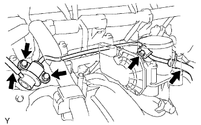

BỘ ĐIỀU ÁP NHIÊN LIỆU > THÁO |
| 1. XẢ ÁP SUẤT CỦA HỆ THỐNG NHIÊN LIỆU |
Ngắt cáp ra khỏi cực âm của ắc quy.
Hãy tháo tấm ốp bậu cửa bên phía người lái.
Dùng một tô vít, nhả khớp 7 vấu.
Dùng một dụng cụ tháo kẹp, nhả khớp 3 kẹp và tháo tấm ốp bậu cửa.
 |
Hãy lật thảm trải sàn và ngắt cút nối ra, như được chỉ ra trên hình vẽ.
Ngắt cáp ra khỏi cực âm của ắc quy.
Khởi động động cơ. Sau khi động cơ tự chết máy, hãy tắt khoá điện OFF.
Quay khởi động động cơ một lần nữa và sau đó kiểm tra rằng động cơ không thể nổ được máy.
Nới lỏng nắp bình nhiên liệu và sau đó xả áp suất bình nhiên liệu hoàn toàn.
Nối giắc của bơm nhiên liệu.
Hãy lắp tấm ốp bậu cửa bên phía người lái.
Xoá các mã DTC (Xem trang Kích chuột vào đây).
| 2. NGẮT CÁP ÂM RA KHỎI ẮC QUY |
| 3. THÁO ỐNG NỐI NẠP KHÍ |
Ngắt ống thông hơi số 2.
Ngắt ống chân không.
Nới lỏng 2 kẹp ống và tháo 2 bu lông và ngắt ống nối nạp khí.
| 4. THÁO BỘ ĐIỀU ÁP NHIÊN LIỆU |
|  |
Ngắt ống chân không.
Ngắt ống nhiên liệu số 2.
Tháo 3 bu lông và bộ điều áp nhiên liệu.